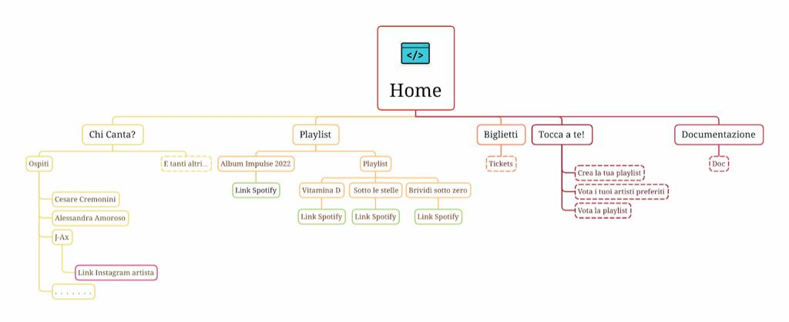
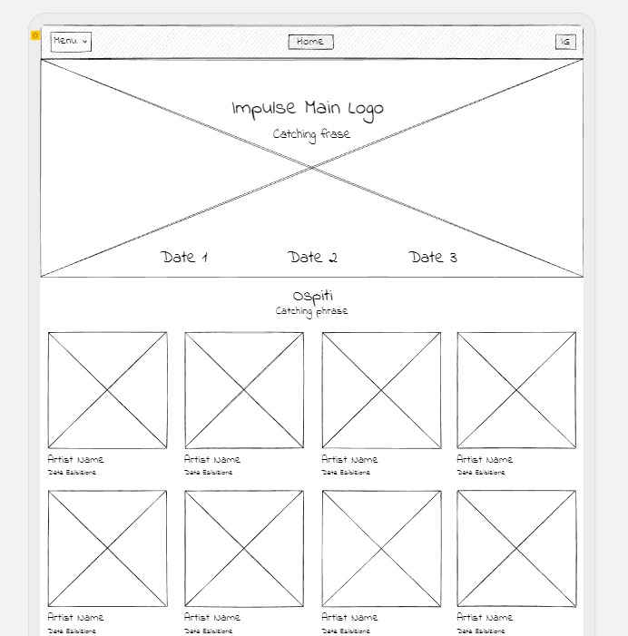
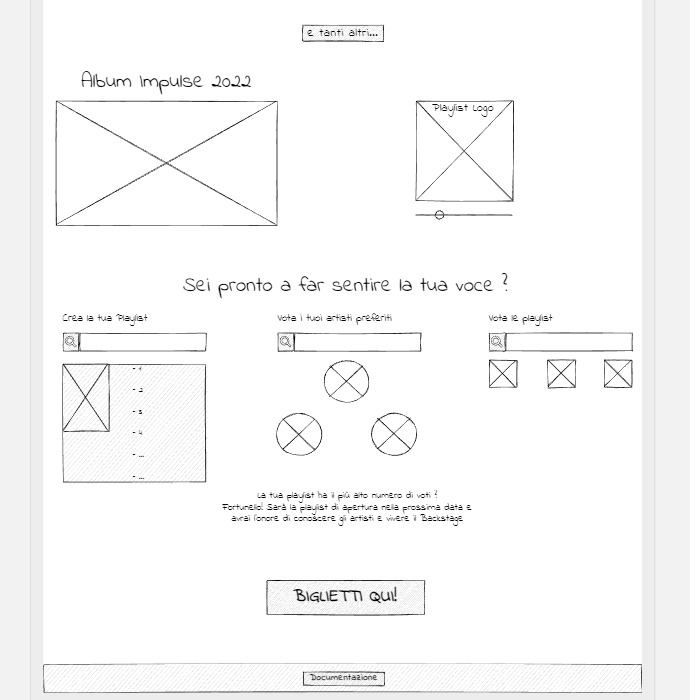
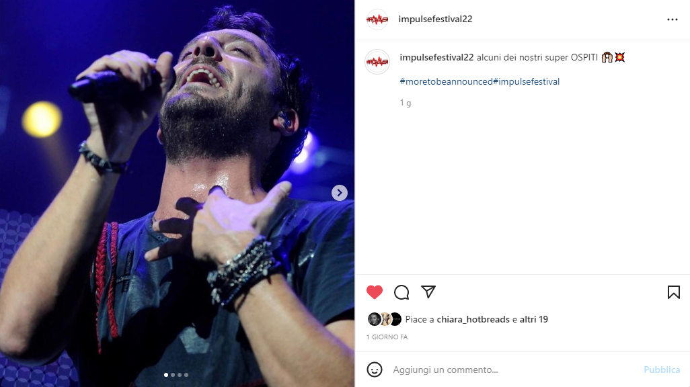

Documentazione sito IMPULSE
Abstract
Ti sei mai chiesto se esista un festival di musica italiana che ti faccia ballare tutta la notte insieme agli artisti italiani più famosi del momento? Allora Impulse fa al caso tuo!
Questo sito web ha come obiettivo quello di pubblicizzare e lanciare un nuovo festival indirizzato principalmente ad un target giovane (18-30) col fine di avvicinarlo al panorama musicale italiano, rimasto fermo per due anni interi causa Covid-19. Abbiamo scelto di lavorare su un template responsive, in cui gli utenti possano non solo usufruire delle principali informazioni del festival, ma anche essere parte integrante dell’organizzazione di esso!
Project Management Plan
Benchmarking
-
Obiettivi: il sito web di Impulse promuove la creazione di un festival interamente all’italiana, con l’obiettivo d’invogliare i giovani ad avvicinarsi al meraviglioso mondo della musica live. Per allargare il target utente e rendere il sito più user-friendly possibile, abbiamo deciso di svilupparlo in un’unica pagina percorribile in modalità scrolling. Divertimento, unione, sfogo, adrenalina, emozioni sono solo alcune delle parole chiave del nostro festival. È importante riavvicinare i giovani alla musica…perché c’è bisogno di musica!
-
Target utente: il sito è principalmente rivolto a giovani italiani dai 18 ai 30 anni.
-
Competitors: prima di procedere con la struttura del sito, è necessaria un’analisi dei competitors quali Nameless, Untold, Ultra, Tomorrowland e Coachella.
- Nameless: uso spropositato dei colori, poco ordine a livello grafico e di contenuti (caratteri troppo grandi), preponderanza contenuti inerenti a vendita dei biglietti, bello il logo centrale che si estende lungo tutta la pagina home, line up poco comprensibile (nomi degli artisti troppo attaccati e con carattere poco leggibile) !!! sito intero rimosso
- Untold: colori scuri e confusionari. Efficace la scelta della grafica degli artisti e la sponsorizzazione dell’app.
- Ultra: colori troppo scuri che non rendono l’atmosfera di un festival e non invogliano a guardare il sito. Il punto di forza è che il sito è costruito interamente su un’unica pagina ed è ordinato.
- Tomorrowland: uno dei migliori a livello grafico, efficace la scelta del video di sfondo della home, da migliorare i package ma complessivamente un valido competitor.
- Coachella: quello che più ci ha stupito, sia a livello grafico che di contenuti. Bella l’idea delle playlist riferite al festival, soprattutto per creare un legame con l’utente. Colori pastello e grafica minimale rendono tutto più comprensibile.
Struttura e layout
Architettura del sito
Wireframe
 Look and Feel
Il logo IMPULSE e i loghi PLAYLIST sono stati realizzati tramite app Assembly. I colori del logo IMPULSE (due tonalità di rosso) riprendono l’idea che vogliamo dare del festival, racchiusa nella catch frase “il festival che ti fa battere il cuore”, dunque esplosività, emozioni, adrenalina. Questi colori sono gli stessi del background del body e degli elementi importanti nella pagina. Il testo è bianco poiché risalti sullo sfondo più scuro. Le immagini degli artisti sono state scaricate da “Google immagini” , quella di sfondo da “Raw pixel”, così come il logo del menu a tendina.
Linguaggi e Strumenti
I linguaggi utilizzati sono stati HTML e CSS, partendo da zero. Gli strumenti tecnologici utilizzati a supporto della progettazione web sono: “Fontawesome” per le icone dei social, “Bootstrap” principalmente per la responsiveness e gli elementi visivi del sito, “Youtube” e “w3school” per tutorial, “Spotify”, “Google font” per i titoli e il testo, “Color picker” per la scelta dei colori, “Xmind” per la struttura ad albero, “Uisard” per il wireframe, “Github” per la pubblicazione. Come text editor abbiamo utilizzato “Sublime text” e “Google Analytics” per le indagini statistiche e monitoraggio del sito.
Communication Strategy
Background
Analizzando i siti competitor sopra citati, ci siamo accorti che uno dei maggiori punti di forza è la completezza: ogni sito presenta tutti i contenuti necessari all’utente potenzialmente interessato al festival. È però vero che in questo modo, diventano troppo disordinati e dispersivi. Ma quello che più manca è un legame diretto con l’utente: non esistono spazi ad esso dedicati, in cui possa esprimersi in merito agli artisti e la musica del festival, creando recensioni, playlist, like o valutazioni. Crediamo che, dal punto di vista di comunicazione web, sia un tassello mancante ma necessario in un sito web di un evento dedicato al pubblico, sia per attrarre e invogliare maggiormente l’utente a parteciparvi, che per dargli un ruolo attivo e di contributo al festival. Inoltre, abbiamo preferito presentare prima il festival e le opportunità che offre, e solo alla fine proporre l’acquisto dei biglietti.
Obiettivi comunicartivi
Pubblicizzare la creazione di un nuovo festival, promuovere gli artisti italiani sostenendo e diffondendo la loro musica, sensibilizzare i giovani all’ascolto, innovazione, conoscenza di nuovi artisti, condivisione dei propri gusti e creazione di una community.
Target audience e messaggio
Il sito si rivolge a tutti gli appassionati di musica italiana e a chi è pronto a scoprirne il fascino. Il target primario è di giovani in cerca di divertimento (18-30), quello secondario di adulti (40-50) che non conoscono gli artisti più in voga fra i giovani. Questi gruppi vengono solitamente raggiunti attraverso canali social (Instagram). Per raggiungerli più facilmente, efficace è la sponsorizzazione del festival fatta direttamente dagli artisti. Non esistendo ancora un festival di musica italiana come Impulse, crearne uno nuovo è una buona occasione per cambiare lo stato attuale delle cose e dare modo a giovani italiani di vivere un’esperienza unica e irripetibile a suon di musica italiana. Impulse è anche un’occasione per fare nuove conoscenze e condividere una passione
Cosa vuoi che scopra di nuovo il tuo target audience? Il vasto panorama di artisti italiani (e quindi conoscerne anche di nuovi), possibilità di contribuire alla realizzazione del festival tramite la votazione della playlist e artista preferito.
Cosa vuoi che venga percepito/provato dal tuo target audience? Collaborazione ad un evento unico ed esplosivo, entusiasmo nel partecipare ad un festival innovativo.
Quali azioni vuoi che il tuo target svolga una volta raggiunti dal tuo messaggio? Ascoltare più musica italiana, espandere le conoscenze in merito agli artisti italiani, promuoverlo a sua volta, cambiare opinione in merito ai festival (non solo luoghi di sballo ma anche pensati per sano divertimento).
Promozione
Abbiamo scelto di promuovere il sito tramite la creazione di una pagina apposita su Instagram, tramite storie e post in cui i seguaci possono interagire, mettere like, commenti e reazioni.
Valutazione dei risultati
WORK IN PROGRESS ...
